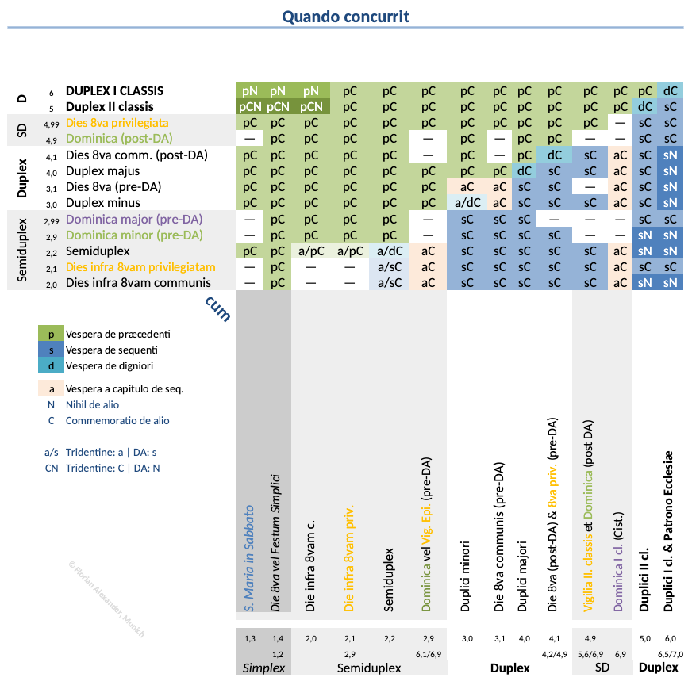

Technical Information
[Databases]
[Tables of Ranks, Occurrence and Concurrence]
[Programs]
[Special characters]
[Exceptions]
[Conditionals]
[Gregorian Chant]
This part of the help manual is written explicitly for encouraging anyone interested in the topic to write his/her own system, using whatever he/she wants from these ideas. It is also meant to provide a general overview of how Divinum Officium and Sancta Missa are internally structured.
Following the provisions of the MIT License, and in accordance with the wishes of the late Laszlo Kiss, the only restriction is that we at The Divinum Officium Project have no legal responsibility for any errata, and the ideas cannot be copyrighted, limiting our rights or the access of others to the same ideas.
Top
Databases
The databases are files, which contain the text of the Breviary.
For easier understanding and handling, they are organized into folders. All files use UTF-8 encoding. If adding files, please be aware of this, as it can and will effect the appearance of text.
The top level folders are folders for the languages (Latin, English, French, etc.). The basic rule is that if a file is missing for a specific (modern) language, the program automatically selects the language text from the English. (Exception: Hyphenated language folders (e.g., Polski-Newer) first select the un-hyphenated folder of that language first.
Each language folder contains the same set of subfolders, which represents the parts of the printed breviary volumes: Psalterium, Tempora, Sancti, Commune. For technical reasons, there are separate folders for the Psalterium and for the Martyrologium. Folders marked "M" are used to display the Monastic version of the Office. Whenever separate files in the "M"-folders are unnecessary, the script defaults to that same folder without "M".
The style and punctuation used within the text is that of the 1962 liturgical books (i.e. natalicio is preferred to natalitio, abicere to abjicere, etc.), with the exception that one space is used between sentences, and no space is placed before a colon or other punctuation. In accordance with the principles sent to the typographers of the 1960 editiones typicae, the letter J in the 1960 rubrics is transformed to the letter I. (Sacrae Congregatio Rituum, "Ordinationes ad librorum liturgicorum editores", 26.VI.1960) The code is capable of automatically making certain typographical and rubrical changes to account for these and other variations in the 1960 rubrics.
The files itself usually are converted into hash elements, e.g. [Ant Matutinum], [Capitulum Nona], etc.
The key is enclosed within square brackets [ ... ] which is a separate line followed by the body of the element. For instance, [Ant 2] refers to the Benedictus antiphon at Lauds, while [Lectio93] normally refers to the 9th (hagiographical) reading of a commemorated saint (pre-1960), which became the 3rd reading at Matins on 3rd class feasts under 1960 rubrics.
These elements are read and composed by the code.
The folder and files can be viewed within the GitHub repository, which shows the files in the following folders in the directory ~/, ~/horas/ and, subsequently, ~/horas/Latin/ (or any modern language):
- Tabulae contains the transfer tables and is found in the top-level folder
~/ only.
File data.txt provides map information for officium versions used in files in below directories:
Kalendaria sanctoral kalendar files.
- Lines starting with
* or #- signs are comments.
- Other lines are divided into multiple parts by the
= char. Within the second section, multiple offices can be assigned to a single day, the latter ones by way of commemoration. These are divided by the ~ char.
- Please note that everything after the second
= is for information only and not used by the code itself.
Meaning is explained in example from file 1888.txt :
01-11=01-11~01-11cc=Sexta die infra Octavam Epiphaniae=2=S. Hygini Papæ et Martyris=1=
On January 11, there is the office contained in file 01-11 (the 6th day of the octave of the Epiphany) with a commemoration of S. Hyginus Pope and Martyr contained in the separate file 01-11cc.
Tempora perpetually-transfers of the Tempora (Divino Afflatu is used as base).Transfer transfers based on Easter date.
- Lines starts with '#-' signs are comments.
- Other lines are divided in three parts: before '=' char, between '=' and ';;', and after ';;'.
Meaning is shown in examples from files a.txt and 402.txt respectively:
01-11=01-10~01-11cc;;1570 1888 1906
01-12=01-11;;1570 1888 1906
On January 11th, in all years with Dominical letter 'A' and under the Tridentine rubrics only, the office is of the 5th day of the octave (transferred from Jan. 10) but still with the commemoration of S. Hyginus.
On January 12th, in the same years and under the same rubrics, the office is of the 6th day of the octave (transferred from Jan. 11) but without the aforementioned commemoration.
03-20=03-19t;;1570
03-20=03-19;;1888 1960 DA M Newcal
In every year where Easter Sunday is on April 2nd, on the day March 20th there is Solemnity of St. Joseph (March 19th) for versions (1888, 1960 etc.; used short versions names from mentioned above file data.txt). For 1570, a different database file is used while in 1906, St. Joseph outranked the Sunday (temporarily) and does not get transferred.
dirge1=01-23 02-03 02-20;;1570
lists days where Officium Defunctorum is read after Vespera and Laudes. (dirge1 is for January and February, dirge2 and dirge3 for remaining months the latter being used for July to December in the general files applicable by Dominical letter).
Hy05-18=1;;DA
marks days where major hymns should be altered according rule XX.3. (1 means merge hymns in Matutinum, 2 - shift hymns)
Stransfer as above but for transfers of Matutinums readings.e.txt:
11-19=114-2~R;;1570 1888 1906 DA
11-25=115-1~B;;1570
11-28=115-6~A;;1570 1888 1906 DA
On Wednesday, November 19th, in all years with Dominical letter 'e' and under the Tridentine rubrics and Divino Afflatu, the Scripture lessons (of Feria IV) are Replaced by the ones from Feria III of the 4th week of November (i.e. Incipit of Joel).
On Tuesday, November 25th, in all years with Dominical letter 'e' and under the 1570 rubrics only, Before the Scripture lessons of the present day (i.e., Incipit of Nahum) is put the Incipit of Nahum from Feria II of the 5th week of November as first lesson.
On Friday, November 28th, again under the Tridentine rubrics and Divino Afflatu, After the Scripture lessons of the present day (i.e., Incipit of Zacharia) is put the Incipit of Malachias from the Sabbato of the 5th week of November as final lesson.
- The Ordinarium folder is the collection of the scripts structuring the canonical hours. It is found directly in the folder
~/horas/. Each hour is represented by one file with the exception of Matins where a second file for the sole use on Epiphany day is to be found there. These files are not converted into hash.
A line starting with # organizes the content (skeleton) and is expanded by the
special.pl program file. For lines starting with $ and & see [Special characters].
- Psalterium folder holds the information usually printed in the Ordinarium and Psalterium sections of the Breviarium Romanum. Prayers.txt contains the common prayers. The rest contains the Benedictions, Doxologies, specific forms of the Invitatory, seasonal parts for Matins (Matutinum special), Lauds & Vespers (Major special); Minor hours (Minor special); antiphons and psalm sets (Psalmi Major|Matutinum|Minor), Marian antiphons, and special seasonal parts for Prime (Prima special).
- Psalms folder holds the 150 psalms, and the canticles for
- 210-216 = Laudes 1;
- 220-226 = Laudes 2;
- 231-234 = New Testament canticles and the Quicumque
The verses are numbered by chapter:verse numbers, and anything in parentheses is printed in small red font. The ‡ symbol is used in the files to demark a verse division which is printed as a flexa, i.e., † in the Antiphonale Romanum, Liber Usualis, and Breviarum Monasticum but a mediant, i.e. *, in the Breviarum Romanum.
- The Tempora folder holds the offices from the Proprium de Tempore. Each office has exactly one file, and each is a hash collection. The naming convention is:
Season name w-d where w is the week of the season, and d is the day of week. (Example: Pent04-2 represents Tuesday of the 4th week after Pentecost. Similarly, 085-0 represents Sunday of the 5th week of August.)
- Sancti is the same collection of offices as found in the Proprium Sanctorum. The naming convention is:
mm-nn where mm is the month, nn is the day. (Example: 07-26 represents July 26, Feast of St. Anne.) For practical reasons, unlike in the Missale Romanum or Breviarium Romanum, the Christmastide offices are split and the "Sanctoral parts" only are placed within the Sancti folder. Files are marked with certain letters for their usage within certain rubrical structures:
- t = 1570 rubrics;
- o = 1888 / 1906 rubrics;
- r = 1960 rubrics;
- da = Divino Afflatu rubrics;
- n = 1960 rubrics with new calendar additions;
- p = Paschaltide;
- q (appended as suffix to one of the previous) = file to be used during Lent;
- t (appended as suffix to one of the previous) = file to be used when an office is to be transferred.
- cc = Simplex feasts perpetually impeded (hence only commemorated, and adressed accordingly in the Kalendarium and Transfer files; see below)
- Commune is the collection for Commune Sanctorum. The name of the office is under the first key: Name. See below for examples.
- Martyrologium contains the files named as mm-nn (in the same way as the Sancti folder) for the Martyrologium. Please note that the Martyrology at Prime is anticipated for the subsequent day. In the Latin text, there exist different folders containing the Martyrology corresponding to the different rubrical structures. For instance, the folder ~/Latin/Martyrologium1960 represents the Martyrology as used in the 1960 rubrics, while ~/Latin/Martyrologium1955R will display that from the 1955 rubrics. Please see credits for the sources.
Top
Tables of Ranks, Occurrence and Concurrence
Each feast is assigned a number for ranking purposes, which can be augmented by a decimal to slightly increase or decrease the rank. To ensure consistency across the database, ranking information is solely extracted from the Latin language files (with the exception of translations of an offices name); everything after the first ;; mark in the [Rank] hash of other languages is ignored. To accomodated the various rubrical structures and their slightly different rules for Occurrence, Concurrence, and Commemorations, apart from very few exceptions, the following ranks are used:
| General Rank | Duplex | Semiduplex | Simplex | Rank |
|---|
| Festum | Dies 8va | Dominicæ | Dies infra 8vam | Vigiliæ | Feriæ |
|---|
| I. classis | Duplex I. cl. (max. sollem.) | | | I. ordinis | | | 7.0 | Excludes all commemorations |
|---|
| Epiphaniæ (Trid.: "IS. ordinis") | I. classis | Pentecostes (I. classis) | Feria privilegiata | 6.9 |
| Duplex I. classis | | | | Nativitatis (I. classis) | | 6.5 |
| II. ordinis | | | | | 6.3 |
| Patronus Eccl. vel Ordinis | | | | | | 6.2 |
| | II. classis (Trid. pre-1900: "IS. ordinis") | Epiphaniæ (Trid.: "IS. ordinis") | | | 6.1 |
| Duplex I. classis secundarium | | | | | | 6.0 | And (6.01) used dynamically for Duplicia primaria in Adventu and post Septuagesimam. |
| II. classis | | | II. classis (1906 & Divino) | II. ordinis (Divino) | | | 5.6 |
|---|
| Duplex II. classis | | | | | | 5.0 |
| Majus | | | | 4.99 | Used dynamically at 2nd Vespers for Dies Octava privilegiata. |
|---|
| | per annum (Divino) | | Epiphaniæ (Divino: II. classis) | Feria privilegiata II. ordinis (Monastic juxta Divino) | 4.9 |
| III. ordinis | | | | | 4.2 | This and above always commemorated. |
| communis (Divino) | | | | | 4.1 |
| Duplex majus | | | | | | 4.0 |
| minus | | | | | | Feria III. classis in Quadragesimæ (1960) | 3.9 | Exact rank always commemorated. |
|---|
| communis (Trid.) | | | | | 3.1 |
| Duplex minus | | | | | | 3.0 |
| Semiduplex | | | 2.99 | Used dynamically at Vespers for Dominicæ majores (Trid.); always commemorated. |
|---|
| | Dominica minor (Trid.) | Corpus Christi (Trid.: "IIS. ordinis") | Epiphaniæ (Trid.: tamquam Dominica) | | 2.9 | |
| Vigilia in Adventu (ad Missam) | | 2.5 | Used only for Missa when Office is of the Feria but Mass of the Vigil. |
| Semiduplex | | | | | | 2.2 | |
| | | Immaculatæ Conceptionis (quia in Adventu) | | | 2.19 | |
| | | III. ordinis | | Feria major | 2.1 | Exact rank always commemorated. |
| | | communis | | | 2.0 | |
| Simplex | | | | | Vigilia communis | | 1.5 | |
|---|
| Simplex (Divino) | | | | | 1.4 |
| S. Maria in Sabbato | | | | | | 1.3 |
| | | | Vigilia communis (Cist.) | | 1.25 |
| Simplex | | | | | | 1.2 |
| | | | | Feria in Adventu (Cist.) | 1.15 | Exact rank always commemorated. |
| Commemoratio | | | | | Feria minor | 1.0 | |
Liturgical books commonly come with a summary section Duæ Tabellæ ex Rubricis Generalibus Breviarii excerptæ to help guide the cleric (compiling an Ordo or praying on his own) to apply the correct Rubrics regarding Commemorations and Translations of Feasts in Occurrence and Concurrence. Since these tables are following different orderings of feasts and are always to be read in conjunction with lenghty annotations, below we provide a Summary of these Summary tables compiled from the Roman Breviaries of 1568, 1888, 1906, and 1942 and the Benedictine Breviaries of 1617 and 1930.


Top
Programs
The programs are written in Perl 5.6 and generate HTML.
Environment variables:
The following program files are used:
- officium.pl Starts the Divinum Officium Desktop program. Composes the main page and also calls upon other scripts.
- Pofficium.pl Starts the Divinum Officium Mobile program. Composes the main page and also calls upon other scripts.
Main Perl Scripts
- horas.pl Interprets the special characters and prints out the Officium for the selected hour.
- special.pl Fills up the skeleton chapters with the actual content from the databases.
- horascommon.pl The file selects the current date, and the office for any given date, and provides rules for precedence.
Auxiliary Perl Scripts
- dialogcommon.pl Interprets the defaults and setup.
- webdia.pl Helper set to generate the dialog table, special html parts of the office tables, and also reads/writes cookies.
- setup.pl Generates the dialog box to set the parameters for web versions.
- popup.pl Generates a popup window if requested by the horas page.
- kalendar.pl Displays the Kalendar and makes it possibile to select a specific date. Uses horascomon.pl and horas.pl script sets.
- edit.pl. Shows the datebase program and other files for the web versions. Uses horascommon.pl.
.txt Files
- Files (i.e. those found in ~/web/www/horas) is the collection of the internal databases for the
web versions, broken down by language.
Top
Special characters
All .txt files employ special characters to properly format the Hours. Each of them, with the exception of the ~ tilde sign, has to be set in the beginning of a line.
- # in the files
of the Ordinarium folder represent a chapter label, e.g. Incipit, Psalms, etc. The Special.pl program interprets and expands or limits primarily these lines. Therefore, they represent the basic structure of the particular Hour.
- [ name ] in a separate line is the key for a hash element, as mentioned earlier.
- $ dollar sign as the first character of a line, followed
by a name, represent a prayer found in Psalterium/Prayers file. These are the candidates
for Popup if psalmi option is called. Some invoke an internal subroutine.
- & sign calls an internal subroutine. If the subroutine
name starts with capital letter that is listed only in all mode, if it starts with
small letter, psalmi option will expand it.
- @ sign cross-references back to a hash element in another (or the same) file. For instance, @Sancti/12-25:Capitulum Laudes will refer to the Lauds capitulum on Christmas Day. @:Ant 1 will refer to the 1st Vespers Magnificat antiphon within the same file.
- ! An exclamation point (at the beginning of a line) will print the line with red font.
- v. prints the following first letter in large red font.
- r. prints the following first letter as regular red font.
- R.br R. V. * Ant. Benedictio These starting words are printed in regular red font.
- double end of line represents a cell end, the printout will set a border separator.
- _ underscore in itself in a line represents an empty line without a border separator.
- ~ tilde at the end of the line represents contraction of a line of text.
- ( text ) in psalm folder will print the enclosed text in small red font.
- Digits or digits:digits at the beginning of
the line in psalms and readings are interpreted as verse numbers, and are printed in red.
- Common Offices (Cn) refer to the Commune Sanctorum:
| C1 : Common of Apostle | C1a : Common of Evangelists C1v : Vigil of Apostle |
| C2 : Common of One Martyr-Bishop | C2a : Common of One Martyr (not a bishop) |
| C2b : Common of One Martyr-Pope (variations from 1942) |
| C3 : Common of Several Martyr-Bishops | C3a : Common of Several Martyrs (not bishops) |
| C3b : Common of Several Martyr-Popes (variations from 1942) |
| C4 : Common of Confessor, Bishop or Pope | C4a : Common for a Bishop-Doctor of the Church |
| C4b : Common of Confessor-Popes (variations from 1942) | C4b-2 : Common of Doctor-Popes (variations from 1942) |
| C5 : Common of Confessor not Bishop | C5a : Common for Doctor of the Church (not a bishop) |
| C5b : Common of Abbots |
| C6 : Common of One Virgin Martyr | C6a : Common of a Virgin |
| C6b : Common of Several Virgins |
| C7 : Common of a Holy Woman Martyr | C7a : Common of a Widow |
| C7b : Common of Several Holy Women Martyrs |
| C8 : Common of the Dedication of a Church | C9 : Office of the Dead |
| C10 : Office of the Blessed Virgin for Saturday | C11 : Common for the Blessed Virgin Mary |
| C12 : Little Office of the Blessed Virgin Mary | other : reference to Proper office |
| -1 added to the name : Alternative Mass/Oration | p added to the name : Eastertime Office |
Top
Exceptions
Many of the files in the Latin Tempora or Sancti folders have an entry: Rule.
There are the exceptions from those rules built into the Ordinarium
and the Psalterium and represented by the files in those folders.
A usual [Rule] item looks like:
[Rule]
ex C4;
Psalmi Dominica
Antiphones horas
9 lectiones
Each rule is a separate line and exact spelling is required, except for capitalization.
| Rule item | Description | Example | Use case |
|---|
| ex file | everything that is not in the Proprium
is taken from the named file from the Commune or from the file in the Tempora or Sancti
folder | ex C2;
ex Pasc0-0;
ex Sancti/05-08 | |
| vide file | like above, but only the Matins lections and
the Lauds & Vespers antiphons, versum, & oratio are taken from the named file. |
| mtv | Changing the third verse in Iste confessor hymn | vide C4a;mtv | Sancti/01-14 |
| Psalmi Dominica | The Sunday psalm set is used, except if the psalm is explicitly indicated as being proper in the Proprium file. | Sancti/01-01 |
| Psalmi minores ex Psalterio | The minor hours are using the ferial psalms. | --- |
| Feria Te Deum | Te Deum is sung at the end of Matins even on a Feria. | Sancti/01-02 |
| Festum Domini | Under Rubrics 1960, such a feast still trumps any minor Sunday. | Sancti/01-06 |
| Antiphonas horas | Laudes antiphons are used for the minor
hours:
- Ant 1 => Prima
- Ant 2 => Tertia
- Ant 3 => Sexta
- Ant 5 => Nona
| Sancti/01-06 |
9 lectiones
12 lectiones | Matins with 9 (or 12) lessons, i.e., 3 nocturns. | Sancti/01-06
SanctiM/01-06 |
| Doxology=season | Doxology of Hymns changes according to the season. | Doxology=Epi | Sancti/01-06 |
| Psalm5 Vespera=ddd | The last psalm in (2nd) Vespers is the named one. | Psalm5 Vespera=116
Psalm5 Vespera3=113 | Sancti/01-06 |
| omit group list | Skip the named item. | Omit ad Matutinum Incipit Invitatorium Hymnus | Sancti/01-06 |
| limit group list | Special (hard coded) rules for the named items (on all Souls and Triduum Sacrum). |
| Minores sine antiphona | Minor hours are prayed without an antiphon (e.g., Triduum). |
Lectio1 tempora
Lectio1 OctNat | Replacing 1st Nocturn readings according to the rules in the Octaves of Epiphany and Nativity. | Sancti/01-07
Sancti/12-31 |
| scriptura1960 | Under Rubrics 1960, 1st Nocturn lessons are taken from occuring scripture. | Sancti/08-29 |
| No ordinal vespera | Prevents a feast to win or be commemorated at second/first vespers | no secunda vespera | Sancti/01-12 |
| (OC)Papa(e))(CMD)=name | Provides the name for a C(onfessor), M(artyr), or D(octor) Pope(s) in the O(ffice) or C(ommemorated) | OPapaM=Hygínum;
CPapaC=Marcum; | deprecated |
| Sub unica concl | Joining Prayers under one conclusio (esp. Peter + Paul) | Sancti/01-18 |
| in d Nocturno Lectiones ex Commune in dd loco | Taking lessons from the respective place in the Commons. | in 3 Nocturno Lectiones ex Commune in 3 loco; | Sancti/02-05 |
| Una antiphona | Major hours are prayed under one antiphon (e.g., Paschal tide). |
| 1 nocturn | Matins of one nocturn only (e.g., Paschal octave). |
| 3 lectiones | Ferial style Matins under Monastic rules (e.g., dies infra Octavam). |
| Capitulum Versum 2 [hour spec] | Capitulum
is substituted with the [Versum 2] item from the Propria. This occurs at all hours
other than Compline if hour spec is omitted, at Lauds and Vespers if
hour spec is ad Laudes et Vesperas, and at Lauds only
if hour spec is ad Laudes tantum. | Tempora/Pasc0-0 |
Top
Conditionals
The database files contain various types of conditional statements in parentheses which enables the scripts to access the hash elements for various rubrical structures and for various dynamic cases such as what Feria a day occurs on. The general format for such conditionals is as follows:
| stopword | condition | scope descriptor | instruction |
|---|
(optional)
si
deinde
vero
sed
atque
attamen |
(optional subject) predicate [& aut(et/nisi)...]
(tempore) nativitias
rubrica tridentina
feria 3 aut feria 6
commune C11 et commune C10 nisi rubrica monastica
missa tertia
die Sabbato Sancto
(etc.) |
(optional)
loco hujus versus
loco horum versuum
hic versus
hi versus |
(optional)
dicitur (semper)
dicuntur (semper)
omittitur
omittuntur |
Conditions can be broken into various sub-conditions. et and nisi bind stronger than aut. Note that nisi is essentially identical to et except everthing that follows until the next aut must not be true.
Each conditional can have forward and backward scope. The stopwords si and deinde have forward scope. The other stopwords have implicit backward scope unless combined with dicitur semper or dicuntur semper. For nesting purposes, the stopwords have increasing "weight" in the given order.
The instructions omittitur and omittuntur force backwards scope and prevent any forward scope. The singular goes back until the last line break, which in the DO database can also be given by a "joiner line", i.e., a single underscore _. The plural goes back as far as possible unless stopped explictly by a forward scoped statement.
The instructions dicitur and dicuntur force forward scope but do allow backward scope unless followed by semper. The extent of the scope depends on the scope descriptor:
- without scope descriptor: single line backscope depending on stopword (see above); single line forward scope for singular and multi paragraph for plural
loco hujus versus dicitur/dicuntur: single paragraph backscope with single paragraph forward scopeloco horum versuum dicitur: multi paragraph backscope with single paragraph forwards scopeloco horum versuum dicuntur: multi paragraph backscope with multi paragraph forwards scope
To fully embrace the power of conditionals, please have a look at this (indented) example from the beginning of Ordinarium/Completorium.txt
#Incipit
$benedictio Completorium
$Amen
#Lectio brevis
$Adjutorium nostrum
(rubrica 196) $examen
(atque dicuntur semper)
$Pater noster
(rubrica cisterciensis) $Ave Maria
(deinde dicitur)
$Confiteor
$Misereatur
(sed rubrica cisterciensis omittitur)
(deinde dicitur)
$Indulgentiam
(sed rubrica Ordo Praedicatorum aut rubrica cisterciensis omittitur)
$Converte nos
(atque rubrica altovadensis omittuntur)
(rubrica cisterciensis) $clara voce
$Deus in adjutorium
(deinde dicitur)
&Alleluia
(sed rubrica cisterciensis omittitur)
The Incipit and Lectio brevis are part of all versions. So is the versicle Adjutorium nostrum. The rubric about Examination of Conscience has been introduced by Rubricarum Instructum only. The Ave Maria is prayed only in the Cistercian rite. The Confiteor and Misereatur are omitted in the Cistercian rite with the deinde dicitur separating this part from the Pater noster which is still prayed in the Cistercian version. Similarly, the Idulgentiam is not said in the Dominican and Cistercian rites whereas the Converte nos is. In the Reduced version of the Cistercian rite used in the Abbatia B.M.V. de Altovado, however, everything from the Pater noster to the Converte nos has to be omitted but not the Adjutorium nostrum. Therefore, the "stronger" stopword atque is used for nesting purposes.
Top
Gregorian Chant
The capability to display Gregorian Chant essentially builds upon Fr. Matthew Spencer, OSJ's “exsurge—JavaScript library” for rendering SVG images of square note notation from gabc notation, Mr. Bloomfield's Transcription Tools (in particular, the Psalm Tone Tool), and the countless chant transcriptions made available by many in the Public Domain on GregoBase.
Gregorian Chant is displayed when either the vernacular or the base language is set to “Cantilenæ”. The database files are put together just like any other vernacular with chant being input in two ways:
- Directly: GABC notation of the following patterns:
{(c3) A(h)men.(h.) (::)}{name:Amen;...;%%(c3) A(h)men.(h.) (::)}{initial-style:0;%%(c3) R/. A(h)men.(h.) (::)}
- Indirectly: As a sort of link to a GABC score to be looked up in the chant subfolder.
{gabc:Commune/C1/hy--exsultet_orbis_gaudiis--solesmes_1961.1}
Words of Caution:
- The patterns have to be matched exaxtly, i.e., there must be no white space before or after the enclosing curly braces.
- Antiphones, Versicles, Orations, and Chapters, where adjustments have to be made by the code depending on context, mandatoraly have to be input directly.
- The automatic inclusion of Alleluja for Eastertide is restricted to standard versicles; the exclusion of Alleluja in Gesimatide may produce artefacts.
The code is designed to accomodate not only the various solemnity of the days of the church year but also adating the scores depending on the Hour to be prayed (Major vs. Minor) and the Common Tones from both, the Antiphonale Romanum (1949) and the Antiphonale Monasticum (1934). In the database, the following rules have to be adhered to:
- Antiphonæ: with asteriskus, i.e.,
*() and potentially change for Eastertide:
- Standard pattern:
{(c3) ... A(e.)men.(e.) (::) ^_T.P._^ Al(f)le(gf)lú(e.)ja.(e.) (::)}
- Monastic pattern:
{(c3) ... † A(e.)men.(e.) (::) ^_T.P._^ † A(e)men,(ef) al(f)le(gf)lú(e.)ja.(e.) (::)}
- Psalmtones are added to the Antiphone with double semicolon; where applicable, after the Psalms, e.g.,
{...};;92;;8G
- Versūs: Tonus cum Neuma (acc. to Ant. Romanum), i.e.,
h hr g_'/hvGF'E!fgf.
- Orationes: Tonus simplex (acc. to Ant. Monasticum), i.e., with short flexa
†(,) and punctum h dr d. (Rare exception: Commemoration hashes have to be Tonus solemnis instead.)
- Suffrages: Tonus solemnis (acc. to Ant. Romanum):
- Capituli et Lectio brevis (ad Primam): Tonus Capituli (acc. to Ant. Romanum), i.e., with long flexa pause
†(;) and punctum h f er ef.. (The change to Tonus Lectionis Brevis ad Primam is made on the fly.)
[Programs]
[Databases]
[Special characters]
[Exceptions]
[Conditionals]
[Gregorian Chant]
T.A.D.M.N.
|